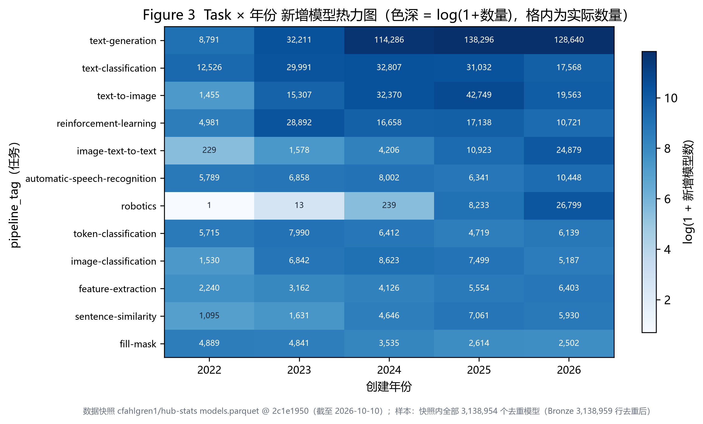
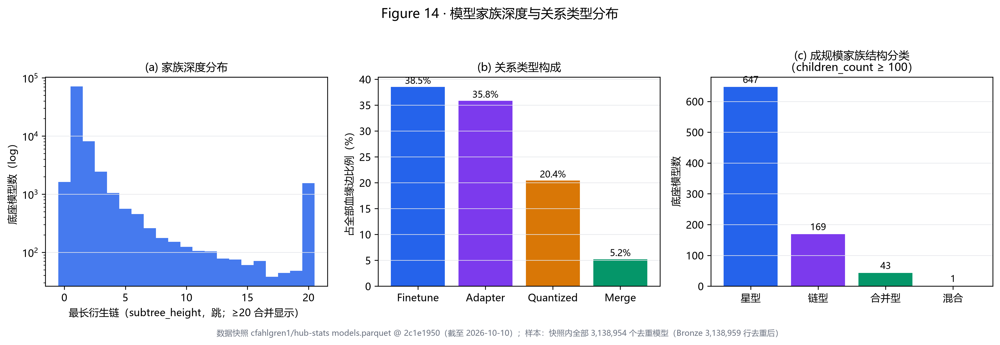
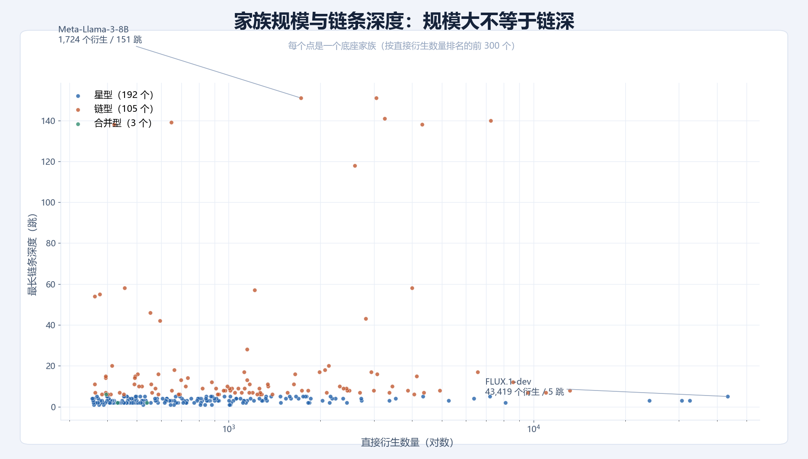
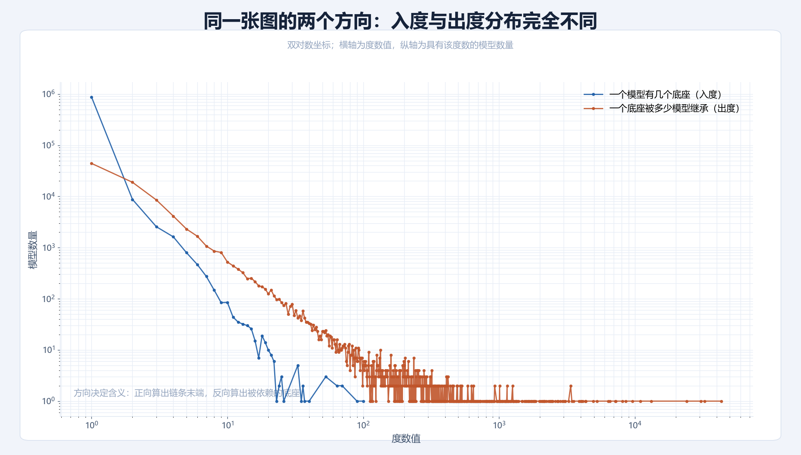

01 · 模型生态
模型的训练和产生
核心观点
模型之间不是孤立的，而是存在一个生态：像生物一样不断被继承、变异、消亡，彼此竞争，并受有限的资源约束。
生态的五种力量
继承变异消亡竞争有限的资源

主图 · 模型的训练和产生过程
03 · Data & Pipeline
数据从哪里来，如何分三层
数据来源
- 来自 Hugging Face 平台公开数据集 models.parquet，固定版本快照
- 选取 1.49 GB、3,138,954 个模型
- 时间覆盖 2022 年 3 月 — 2026 年 10 月
- 原始格式半结构化（Parquet 字段含嵌套结构与数组），需清洗与格式转换
三层各有
BronzeSilverGold
- Bronze · 20 个顶层字段（id / author / createdAt / downloads / pipeline_tag / baseModels …）
- Silver · 3 张表：models（16 列）、model_tags（2 列）、model_base_edges（3 列）
- Gold · 1 张宽表 models_enriched + 7 张统计表（3 张月度表 + 4 张统计表）

主图 · Bronze → Silver → Gold 三层数据流转
0
原始文件（GB）
0
模型总数
0
Bronze 顶层字段
0
Gold 统计表
04 · Environment
运行环境：Spark 如何跑起来
Spark
分布式大数据引擎：把大数据分给很多核、多台机器同时运算，中间结果放在内存。
本项目的实际运行方式
实际上是单机多线程运行，没有使用集群。

主图 · 环境层次 · 运行环境
RQ1 · 生态演化
平台如何随时间演化
采用数据
创建年月、任务类型、所属库、标签。
方法
按月统计新增模型数，再按任务、库、标签各自看时间走势。
发现
- 1 2023 年后加速，2024 年秋达高峰
- 2 各类方向扩张快慢差别明显
- 3 transformers 占第一，转向多库分工
- 4 任务标签缺失逐渐增大

发现 1 · 月度演化

发现 1 · 赛道动图

发现 2 · 任务增长

发现 2 · 时间热力图

发现 3 · 库占比

发现 4 · 任务缺失
RQ2 · 注意力集中和长尾
注意力如何集中、长尾如何分布
采用数据
downloads（近 30 天）、downloadsAllTime（累计）。
方法
把数据压缩成频数表后计算。
发现
- 1 存在头部效应，任何尺度上都存在
- 2 差距主要来自发布账号之间，与技术领域无关
- 3 统计窗口越长，头部效应越明显

发现 1 · 洛伦兹曲线

发现 1 · 长尾

发现 2 · Theil 分解

发现 2 · 主体效应

发现 3 · 窗口比较
RQ3 · 谱系网络
模型之间的血缘结构（上）
采用数据
baseModels 血缘边表。
方法
用图算法计算血缘网络的度数、连通情况、中心性与结构类型。
发现（上）
- 1 家族结构以星型为主
- 2 继承关系以浅层为主，绝大部分只发生在第一跳

发现 1 · 家族结构类型

发现 2 · 深度关系

发现 2 · 规模与深度
RQ3 · 谱系网络
模型之间的血缘结构（下）
发现（下）
- 3 PageRank 中心性排名随方向改变：正向算出的是链条末端，反向算出的是被依赖的底座
- 4 复用不等于下载：被继承记录开发者的选择，下载记录使用者的选择
备选 · 家族案例
三个家族案例：Flux、NoobAI、Llama，按关系拆分的辐射图。

发现 3 · 度数方向

发现 4 · 复用 vs 下载


RQ4 · 下载热度
什么决定一个模型的热度
采用数据
7 个属性：点赞数、创建天数、标签数量、被继承次数、维护跨度、任务类型、所属库。
方法
确定性哈希抽样后计算。
发现
- 1 起作用的主要是可发现性；技术属性权重低，被继承次数几乎不贡献
- 2 属性与热度的关系随时间漂移，早年规律会失效
- 3 热度不只取决于模型本身，还取决于发布账号

发现 1 · 特征重要性

发现 2 · 时间切分
发现 3 · 发布者效应
RQ5 · 任务类型
不同任务的生态结构一样吗
采用数据
任务类型（pipeline_tag）、两种下载量、模型年龄、维护跨度、家族规模、血缘声明情况。
方法
按任务分组做描述统计并计算。
发现
- 1 每个任务内部都是极端长尾
- 2 数量多的领域不等于被用得多的领域
- 3 不同领域复用方式不同，谱系结构带领域特征

发现 1 · 任务 Gini 排名

发现 2 · 库任务结构

发现 3 · 任务谱系
06 · Evaluation
测试效果：训练出来的模型评价
回归模型 · 独立测试集 R²
- 基线（只看平均值）0 · 线性回归 0.4177 · 梯度提升树 0.6313 · 随机森林 0.6631（平均误差 1.0139，目标取对数）
- 非线性模型比线性高 0.21 以上，不是简单叠加、按固定比例变化的关系
- 按创建时间重新切分训练/测试集后，R² 从 0.6779 降到 0.5034，下降 25.7%
特征重要性排序
主图 · 特征重要性排序
评价结论
模型自身属性可解释下载热度约三分之二，剩下三分之一来自曝光、推荐、社区传播等模型之外因素；这是同一快照内的同期关联，不能用来预测新模型会不会火。图算法一侧：正向与反向 PageRank 各跑一轮、六个迭代步骤全部跑完。
0
社区划分（个）
0
弱连通分量（个）
0
扩展性计时执行（次）
0
测量组合（个）